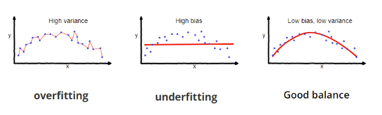
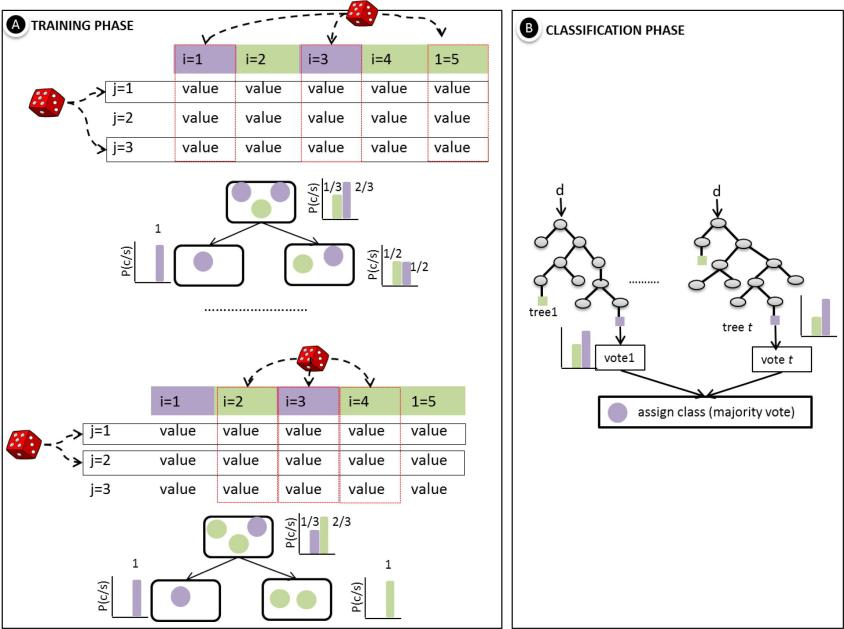
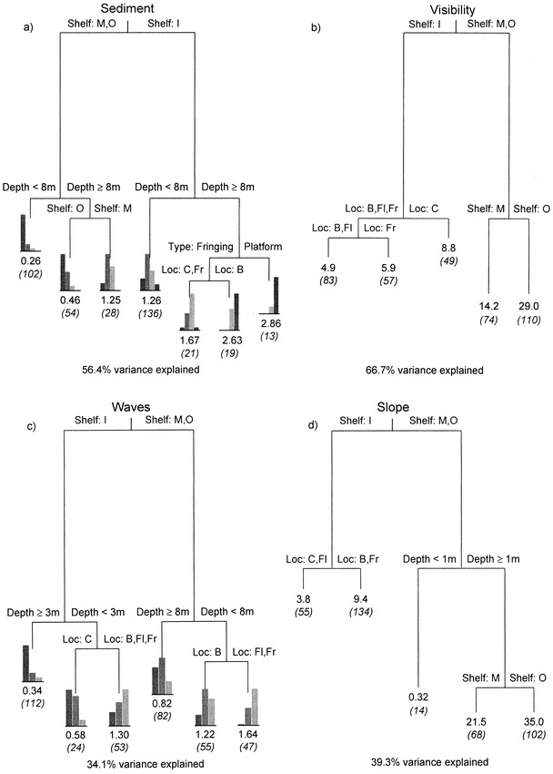

6 week_7
7 Summary
7.1 Introduction
This week’s focus in Remote Sensing was on classifying remotely sensed data, a process of categorizing areas in images. The primary method is machine learning, a subset of computer science developing algorithms that allow computers to learn and make decisions independently. This learning process is similar with human inference, where experiences are generalized to form conclusions, enabling machines to do classification and analysis effectively, without requirement of explicit programming for each specific task.
7.2 Classification methods
7.2.1 Classification Trees

Purpose: Classify data into discrete categories based on certain features.
Example: Deciding whether to play golf based on weather conditions (temperature, rainfall, wind).
Classification trees, similar with flowcharts, systematically classify data into discrete categories based on its features, like deciding to play golf depending on weather conditions. Starting from the root node, a split is established by solving an optimization problem (usually minimizing an impurity measure), before proceeding to recurse on the two resulting child nodes (Bertsimas and Dunn 2017). Each node in the tree makes a decision, categorizing the data into different paths based on specific criteria or thresholds. The decision to split at each node is often based on criteria such as Gini impurity, the goal is to choose splits that decrease Gini impurity, leading to a more accurate classification.
7.2.2 Regression Trees
Purpose: Predict a continuous dependent variable. Example: Predicting GCSE scores, where linear regression is inadequate due to non-linear relationships and large residuals. Data is divided into smaller subsets using decision trees, allowing for more precise predictions in cases where a simple linear model fails. The decision to split data is based on reducing the sum of squared residuals (SSR), aiming for the lowest SSR at each split. The initial split (root of the tree) is chosen based on the threshold that minimizes SSR, and this process is repeated for subsequent splits. To avoid overfitting, a minimum number of observations can be required before further splitting.
7.2.3 overfitting:

Overfitting, with high variance and low bias occurs when a model learns the training data too well. his happens often with very complex models that have too many parameters relative to the number of observations. While such a model may perform exceptionally well on the training data, its performance usually drops significantly on new, unseen data because it has essentially memorized the training data rather than learning the general underlying patterns. Weakest link pruning is needed when dealing with fully grown decision trees that may have overfitted the training data
Underfitting, with high bias and low variance, occurs when a model is too simple to capture the underlying structure of the data. This can happen if the model does not have enough parameters (or complexity) to learn from the data
Thus we are aiming for good balance with low bias and low variance, performs well on the training data and maintains good performance on new, unseen data.
7.2.4 Random Forests
Fig from
A random forest (RF) classifier is an ensemble classifier that uses a randomly chosen subset of training samples and variables to generate several decision trees ((Belgiu and Drăguţ 2016)). In contrast to alternative approaches, the RFR model can handle large data dimensionality and multicollinearity and is less sensitive to noise and overfitting (Wang et al. 2016)
It enhance decision tree performance by aggregating predictions from multiple trees, reducing overfitting and improving accuracy: Uses random samples with replacement to create diverse trees. At each split, selects a random subset of features, increasing tree diversity. Repeats sampling and feature selection to create many trees, forming a forest. Each tree votes on predictions; the majority vote decides the final prediction. Estimates prediction error using data not sampled for each tree, providing an unbiased error estimate. Trees grow to their full size without pruning, relying on the ensemble to prevent overfitting. Typically, the number of features considered at each split is the square root of the total number of features.
7.2.5 Unsupervised classification
Unsupervised classification, often called clustering, includes techniques like k-means and DBSCAN, which categorize data based on features like spectral space and distance metrics
7.2.6 Supervised classification
Supervised classification is a method used to categorize data into predefined groups or classes based on training data that is already labeled.
7.2.7 Support Vector Machine (SVM)
is a powerful tool in machine learning for sorting data into categories. Here’s a simpler breakdown of what it does:
draw a line (or a plane in higher dimensions when there are more then 2 datasets) that best separates different types of data points.
SVM looks for the line that keeps the maximum distance from the closest points of any category, ensuring it’s not just separating but also maximizing the space between these categories. These closest points are called support vectors.
Two main settings, C and Gamma, help adjust how strict the model is. A higher C makes the boundary stricter but might only focus on the most challenging points to separate. Gamma affects how much influence each data point has; a high Gamma means only nearby points matter much.
Sometimes data isn’t easily separable with a straight line. SVM can twist and turn the data (using something called the kernel trick) to find a way to separate it effectively.
8 Application

Fig from (De’ath and Fabricius 2000)
Classification and regression trees are ideally suited for the analysis of complex ecological data. In this study (De’ath and Fabricius 2000) we evaluate survey data, including physical and spatial environmental variables and abundances of soft coral species (Cnidaria: Octocorallia) from the Australian central Great Barrier Reef using regression trees and categorization. Dense aggregations, usually consisting of three taxa, were found to be limited to specific habitat categories, each of which was determined by a combination of three to four environmental variables, according to regression tree analyses. The study found that both physical and spatial variables were effective predictors of soft coral abundances, and spatial variables could act as surrogates for physical variables in extensive reef complexes where physical data might be unavailable. The case study also illustrated the advantage of CART over linear models in uncovering patterns in the data
Regression trees connecting the four spatial variables (shelf position, location, reef type, and depth) to the distributions of the four physical variables (sediment, visibility, waves, and slope).
In the case study conducted in Bangladesh (Zhao et al. 2019), the Random Forest Regression (RFR) model was used to estimate poverty using data from multiple sources, including nighttime light data, Google satellite imagery, land cover map, road map, and division headquarter location data. The household wealth index (WI) from the Demographic and Health Surveys (DHS) was the measure of poverty. The RFR model’s effectiveness stems from its ability to handle various data types, manage high dimensionality, and cope with multicollinearity, leading to a more accurate and reliable poverty estimation compared to traditional methods.
Here is the dataset used in this study.

Fig from (Zhao et al. 2019)
- Wealth Index (WI) map, (b) National Polar-orbiting Partnership Visible Infrared Imaging Radiometer Suite (NPP-VIIRS) nighttime light (NTL) image, (c) Open Street Map (OSM) primary and secondary road map, (d) land cover map
The model demonstrated good predictive power and generalization ability. The use of The methodology was efficient in measuring poverty due to RFR’s robust handling of complex and varied data
The two articles showcase the application of machine learning techniques, specifically Classification and Regression Trees (CART) and Random Forest Regression (RFR), in both ecological and socioeconomic analyses. These studies demonstrate the flexibility and utility of these methods in addressing complex, multidimensional issues across different fields.
RFR, an ensemble method that combines multiple decision trees, has shown improved accuracy and robustness compared to single decision trees. RFR is crucial in poverty measurement, as poverty is multifaceted, influenced by various socioeconomic and environmental factors, thus it, together with many similar social-related issues, should be measured by multi-source datasets. Also RFR can handle multicollinearity better then CART, as in social sciences, many variables can be interrelated, which complicates the analysis. So for complex issues like poverty measurement, where accuracy, the handling of multicollinear data, and robustness to noise are required, RFR is usually a suitable method.
9 Reflection
This week’s exploration of classifying remotely sensed data using machine learning is similar with human inference. What I found useful in the further study is classification trees and regression trees, with applications ranging from weather-based activities to predicting educational outcomes. The concept of overfitting and underfitting brought me back to the memory of learning regression models.
Random Forests (RF) gave me an idea of how to avoid the bad effects of multicollinearity similar with the knowledge from multi-linear regression. It can handle large datasets and complex interactions through gathering decision trees, reducing overfitting and enhancing predictive accuracy. This was practically useful in studies like coral species analysis and poverty estimation.
Unsupervised methods like k-means and supervised techniques, including Support Vector Machines (SVM), expanded my understanding of machine learning’s diversity.
Through these insights, I gained a holistic view of machine learning’s role in data analysis, from theoretical foundations to real-world applications.